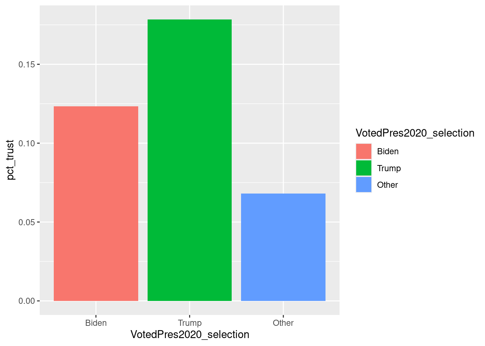

Chapter 8 Communicating Results
One of the most important aspects of data analysis is communicating the results to others. This could include other researchers familiar with our survey data or others who will be seeing this data and results for the first time. Ensuring that we are accurately discussing the methodology, analysis, and displaying results is crucial to making sure our audience comprehends what the results are saying. There have been jokes about how we can lie with statistics, so it is our responsibility to discuss and present the results carefully.
8.1 Describing Results through Text
As researchers, we often focus on the data itself; communicating the results effectively can be a forgotten step. However, all of the steps that we as researchers need to consider when conducting analyses must be communicated to our audience as well. The first few chapters of this book Chapters 2 through 3 provided insights into what we need to consider when conducting analyses. Each of these topics should also be considered when presenting results to others.
8.1.1 Methodology
If we are using existing data, methodologically sound surveys will provide documentation about how the survey was fielded, the questionnaires, and the needed information for analyses. For example, the survey’s methodology reports should include the population of interest, sampling procedures, response rates, questionnaire documentation, weighting, and general overview of disclosure statements. Many organizations are part of the American Association for Public Opinion Research’s (AAPOR) Transparency Initiative, which requires the organization to include specific details in their methodology to ensure that people understand the context in which analyses can and should be conducted from each survey. Being transparent about these methods is crucial for the scientific rigor of the field.
When using publicly available data, such as with the examples in this book, oftentimes we can link to the methodology report in our final output. However, it is still important to provide the high-level information that will make it easy for the audience to understand at a quick glance the context around the findings. For example, indicating the target population (e.g., all U.S. homeowners or U.S. eligible voters) helps the audience understand how generalizable the results are. Including the question wording will also ensure that the audience understands the context and limitations if the response options are narrow. The details provided in Chapter 2 about what we as researchers need to consider when analyzing the data should also be provided to the audience when presenting the results.
The inclusion of this material is especially important if no methodology report exists for the data used in the analyses. For example, if the researcher conducted the survey for the purposes of this analysis, then including as much information about the survey as possible in the write-up and dissemination of the findings is crucial. Following the AAPOR Transparency Initiative guidelines is a good way to ensure all necessary information is provided to the audience.
8.1.2 Analysis
In addition to how the survey was conducted and weights were calculated, providing information about what data prep, cleaning, and analyses were used to obtain these results is also important. For example, in Chapter 6 we compared the distributions of education from the survey to the ACS. To do this, we needed to collapse education categories provided in the ANES data to match the ACS. Providing both the original question wording and response options and the steps taken to map to the ACS data are important for the audience to know to ensure transparency and a better understanding of the results.
This particular example may seem obvious (combining Bachelor’s Degree and Graduate Degree into a single category). Still, there are cases where re-coding or handling of missing data is more important to disclose as there could be multiple ways to handle the data and the choice we made as researchers were just one of many. For example, many examples and exercises in this book remove missing data, as this is often the easiest way to handle missing data. However, in some cases, missing data could be a substantively important piece of information, and removing it could bias results. Disclosing how data was handled is crucial in helping the audience better understand the results.
8.1.3 Results
Presenting and communicating results is more than just displaying a table with data or a nice-looking graph. Adding context around point estimates or model coefficients is important for helping the audience understand what the data mean. We, as researchers, can do a couple of things to help the audience understand the data.
First, we can presenting the important data points in a sentence. For example, if we were looking at election polling data conducted before an election, we could say something like:
As of [DATE], an estimated XX% of U.S. registered voters say they will vote for [CANDITATE NAME] for president in the [YEAR] general election.
This sentence provides a few key pieces of information for the audience:
- [DATE]: Given that polling data is dependent on a point in time, providing the date of reference is important for understanding when this data is valid.
- U.S. registered voters: This is the target population, and by including this information, we are telling the audience the population for reference and who was surveyed.
- [CANDITATE NAME] for president: This provides the information on the estimate. The number is the percentage of those voting for a specific candidate for a specific office.
- [YEAR] general election: As with the bullet above, this information provides more context around the specific election and year. The estimate would take on a different meaning if we changed it to a primary election, for example.
This sentence also includes the word “estimated.” When presenting results in aggregate from surveys, it is important not to talk about estimates in the absolute as we have errors around each estimate. Using words like “estimated,” “on average,” or “around” will help convey the uncertainty with a given value. Including that uncertainty is even more helpful to researchers. For example, a sentence could include the uncertainty as “XX% (+/- Y%).” Confidence intervals can also be incorporated into the text to assist readers.
Second, providing context and discussion around the meaning of the point can help the audience glean some insight into why the data is important. For example, when comparing two points, it could be helpful to indicate that there are statistically significant differences and the impact and usefulness of this information. This is where it is important as researchers to do our best to keep biases in check and present only the facts logically.
If speculation is included, using statements like “the authors speculate” or “these findings may indicate” help relay the uncertainty around the notion while still lending a plausible solution. Additionally, researchers can present a few alternatives or competing discussion points to explain the results’ uncertainty further.
It is important to remember that how we, as researchers, discuss these findings can greatly impact how the audience interprets the findings. There, we should take extreme caution when talking about and presenting results.
8.2 Visualizing Data
Including data tables and graphs are used to portray a large amount of data in a concise manner. Although discussing key findings in the text is important, it is easier for the audience to digest large amounts of data in graphical or table format. When used correctly, combining text, tables, and graphs is extremely powerful in presenting results. This section provides examples of using the {gtsummary} and {ggplot} packages to enhance the dissemination of results.
8.2.1 Tables
Tables are a great way to provide a large amount of data when we want the individual data points to be read. However, it is important to present tables in a readable format. Numbers should be aligned, and rows and columns should be easy to follow. Using key visualization techniques, we can create tables that are informative and nice to look at. Many packages can be used to create easy-to-read tables (e.g., {kable} + {kableExtra}, {gt}, {gtsummary}, {DT}, {formattable}, {flextable}, {reactable}). We will focus on {gt} and {gtsummary} here, but we encourage learning about others as they may have additional helpful components.
Let’s start by using some of the data we calculated earlier in this book. In Chapter 5, we looked at the total electric bill by Census region using the recs data:
bill_region <- recs_des %>%
group_by(Region) %>%
cascade(elec_bill = survey_total(!is.na(DOLLAREL)))
bill_region## # A tibble: 5 × 3
## Region elec_bill elec_bill_se
## <fct> <dbl> <dbl>
## 1 Northeast 21006538. 0.00644
## 2 Midwest 26371735. 0.000251
## 3 South 44441974. 0.0252
## 4 West 26388003. 0.0191
## 5 <NA> 118208250. 0.0320The native output that R produces may work for initial viewing inside RStudio or when creating basic output with an R Markdown or Quarto document. However, when viewing these results in other publications, such as the print version of this book or for more official dissemination, adjusting the display can make it easier for users to follow.
There are multiple table styling packages available (e.g., {kable}, {gt}, {formattable}). For this book, we will walk through an example using {gt}.
Looking at the output from bill_region, there are a couple of items that are probably obvious to fix: (1) the “NA” in Region and (2) the variable names as the column headers. To fix these, we can add .fill to the cascade function and adjust the column labels with {gt}:
library(gt)
bill_region_gt <- recs_des %>%
group_by(Region) %>%
cascade(elec_bill = survey_total(!is.na(DOLLAREL)),
.fill = "Total") %>%
gt() %>%
tab_spanner(label = "Electric Bill (In Dollars)",
columns = -Region) %>%
cols_label(elec_bill = "Estimate",
elec_bill_se = "(s.e.)")
bill_region_gt| Region | Electric Bill (In Dollars) | |
|---|---|---|
| Estimate | (s.e.) | |
| Northeast | 21006538 | 0.0064400 |
| Midwest | 26371735 | 0.0002512 |
| South | 44441974 | 0.0252461 |
| West | 26388003 | 0.0191263 |
| Total | 118208250 | 0.0320356 |
We could also make the data more readable in this table by formatting the columns as currency and adding a double line above the total row:
bill_region_gt2 <- bill_region_gt %>%
fmt_currency(columns = elec_bill,
decimals = 0,
currency = "USD") %>%
fmt_currency(columns = elec_bill_se,
decimals = 4,
currency = "USD") %>%
tab_style(
style = cell_borders(sides = c("top"),
style = "double"),
locations = cells_body(columns = everything(),
rows = Region == "Total")
)
bill_region_gt2| Region | Electric Bill (In Dollars) | |
|---|---|---|
| Estimate | (s.e.) | |
| Northeast | $21,006,538 | $0.0064 |
| Midwest | $26,371,735 | $0.0003 |
| South | $44,441,974 | $0.0252 |
| West | $26,388,003 | $0.0191 |
| Total | $118,208,250 | $0.0320 |
Using the different functions of {gt}, we can continue to add elements and themes to our table until we have a table style that works well and communicates the information. These functions can be used with both survey and non-survey data, but it is crucial that we retain error information when presenting survey results. In this example, we used tab_spanner() to indicate that the estimate and the standard error were connected.
8.2.2 Charts and Plots
Survey analysis can result in an abundance of printed summary statistics and models. Even with the best analysis, the results can be overwhelming and difficult to comprehend. This is where charts and plots play a key role in our work. By transforming complex data into visual representation, we can recognize patterns, relationships, and trends with greater ease.
R has many packages for creating compelling and insightful charts. We will focus on {ggplot2}, a member of the {tidyverse}. This package is a powerful, flexible tool for creating a wide range of data visualization.
{ggplot2} follows the “grammar of graphics,” a framework that incrementally adds layers of chart components. We can customize visual elements such as scales, colors, labels, and annotations to enhance the understanding of data.
Let’s walk through an example using the ANES 2020 data. As usual, we begin by setting up our survey object:
library(censusapi)
library(tidyverse)
# Note that we need a Census key to access the Census API
cps_state_in <- getCensus(
name = "cps/basic/nov",
vintage = 2020,
region = "state",
vars = c("HRHHID", "HRMONTH", "HRYEAR4", "PRTAGE", "PRCITSHP", "PWSSWGT"),
key = Sys.getenv("CENSUS_KEY")
)
cps_state <- cps_state_in %>%
as_tibble() %>%
mutate(across(.cols = everything(),
.fns = as.numeric))
# Voting age citizen population
targetpop <- cps_state %>%
as_tibble() %>%
filter(PRTAGE >= 18,
PRCITSHP %in% (1:4)) %>%
pull(PWSSWGT) %>%
sum()library(osfr)
library(srvyr)
library(dplyr)
source("helper-fun/helper-functions.R")
anes_in <-
read_rds_tsr("anes_2020.rds") %>%
mutate(Weight = Weight / sum(Weight) * targetpop)
anes_des <- anes_in %>%
as_survey_design(
weights = Weight,
strata = Stratum,
ids = VarUnit,
nest = TRUE
)Next, we select our desired data points.
anes_des_der <- anes_des %>%
mutate(TrustGovernmentUsually = case_when(
is.na(TrustGovernment) ~ NA,
TRUE ~ TrustGovernment %in% c("Always", "Most of the time")
)) %>%
group_by(VotedPres2020_selection) %>%
summarise(
pct_trust = survey_mean(
TrustGovernmentUsually,
na.rm = TRUE,
proportion = TRUE,
vartype = "ci"
),
.groups = "drop"
) %>%
filter(complete.cases(.))Now, we can begin creating our chart with {ggplot2}. First, we set up our plot with ggplot(). Next, we state the data points we want to show with aes. Finally, we specify the type of plot with geom_*(), in this case, geom_bar().
library(ggplot2)
anes_des_der %>%
ggplot(aes(x = VotedPres2020_selection,
y = pct_trust)) +
geom_bar(stat = "identity")
This is a great starting-off point: we can see that the percentage of people saying they always usually trust the government is higher for those who voted for Trump than Biden or other candidates. What if we wanted to add color to better differentiate the three groups? We can add fill under aesthetics, denoting to use those data points to fill in the bars.
anes_des_der %>%
ggplot(aes(x = VotedPres2020_selection,
y = pct_trust,
fill = VotedPres2020_selection)) +
geom_bar(stat = "identity")
Let’s say we wanted to follow good statistical analysis practice and include our ranges on our plot. We can add another geom, geom_errorbar(), on top of our geom_bar layer using a plus sign +.
anes_des_der %>%
ggplot(aes(x = VotedPres2020_selection,
y = pct_trust,
fill = VotedPres2020_selection)) +
geom_bar(stat = "identity") +
geom_errorbar(aes(ymin = pct_trust_low,
ymax = pct_trust_upp),
width = .2)We can continue adding to our plot until we achieve the visualization we’d like to present.
anes_des_der %>%
ggplot(aes(x = VotedPres2020_selection,
y = pct_trust,
fill = VotedPres2020_selection)) +
geom_bar(stat = "identity") +
geom_errorbar(aes(ymin = pct_trust_low,
ymax = pct_trust_upp),
width = .2) +
scale_fill_manual(values = c("#0b3954", "#bfd7ea", "#8d6b94")) +
xlab("Election choice (2022)") +
ylab("Usually trust the government") +
scale_y_continuous(labels = scales::percent) +
guides(fill = "none")8.3 Reproducibility
Reproducibility is the ability to recreate or replicate the results of a data analysis. If we pass an analysis project to another person, they should be able to run the entire project from start to finish and obtain the same results. Reproducibility is a crucial aspect of survey research because it enables the verification of findings and ensures that the conclusions are not dependent on a particular person running the workflow. Others can review and rerun projects to build on existing work, reducing redundancy and errors.
Reproducibility requires that we consider several key components:
- Code: The source code used for data cleaning, analysis, modeling, and reporting must be available, discoverable, documented, and shared.
- Data: The raw data used in the workflow must be available, discoverable, documented, and shared. If the raw data is sensitive or proprietary, we must be able to provide the data that would allow others to run our workflow.
- Environment: The environment of the project must be documented. Another analyst should be able to recreate the environment, including the R version, packages, operating system, and other dependencies used in the analysis.
- Methodology: The analysis methodology, including the rationale behind specific decisions, interpretations, and assumptions, must be documented. Others should be able to achieve the same analysis results based on the methodology report.
Many tools, practices, and project management techniques exist to make survey analysis projects easy to reproduce. For best results, they should be decided upon and applied at the beginning of a project. Below are our suggestions for a survey analysis data workflow. This list is not comprehensive but aims to provide a starting off point for teams looking to create a reproducible workflow.
8.3.1 Setting Random Number Seeds
Many tasks in survey analysis require randomness, such as model training or creating random samples. By default, the random numbers generated by R will change each time we rerun the code, making it difficult to reproduce the same results. By “setting the seed,” we can control the randomness and ensure that the random numbers remain consistent whenever we rerun the code. Others can use the same seed value to reproduce our random numbers and achieve the same results, facilitating reproducibility.
In R, we can use the set.seed() function to control the randomness in our code. Set a seed value by providing an integer to the function:
set.seed(999)
runif(5)The runif() function generates five random numbers from a uniform distribution. Since the seed is set to 999, running runif() multiple times will always produce the same sequence:
[1] 0.38907138 0.58306072 0.09466569 0.85263123 0.78674676It is important to note that set.seed() should be used before any random number generation.
8.3.2 Git
A survey analysis project produces a lot of code. As code evolves throughout a project, keeping track of the latest version becomes challenging. If a team of analysts is working on the same script, someone may use an outdated version, resulting in incorrect results or duplicative work.
Version control systems like Git can help alleviate these pains. Git is a system that helps track changes in computer files. Survey analysis can use Git to follow the evolution of code and manage asynchronous work. With Git, it is easy to see any changes made in a script, revert changes, and resolve conflicts between versions.
Services such as GitHub or GitLab provide hosting and sharing of files as well as version control with Git. For example, we can visit the GitHub repository for this book (https://github.com/tidy-survey-r/tidy-survey-book) and see the files that build the book, when they were committed to the repository, and the history of modifications over time.
In addition to code scripts, platforms like GitHub can store data and documentation. They provide a way to maintain a history of data modifications through versioning and timestamps. By saving the data and documentation alongside the code, it becomes easier for others to refer to and access everything they need in one place.
Using version control in data science projects makes collaboration and maintenance more manageable. One excellent resource is Happy Git and GitHub for the R useR by Jenny Bryan and Jim Hester.
8.3.3 {renv}
The {renv} package is a popular option for managing dependencies and creating virtual environments in R. It creates isolated, project-specific environments that record the packages and their versions used in the code. When initiated, {renv} checks whether the installed packages are consistent with the record. If not, it restores the correct versions for running the project.
With {renv}, others can replicate the project’s environment to rerun the code and obtain consistent results.
8.3.4 Quarto/R Markdown
Quarto and R Markdown are powerful tools that allow us to create documents that combine code and text. These documents present analysis results alongside the report’s narrative, so there’s no need to copy and paste code output into the final documentation. By eliminating manual steps, we can reduce the chances of errors in the final output.
Rerunning a Quarto or R Markdown document automatically re-executes the underlying code. Another team member can recreate the report and obtain the same results.
Parameterization
Quarto and R Markdown’s parameterization is an important aspect of reproducibility in reporting. Parameters can control various aspects of the analysis, such as dates, geography, or other analysis variables. By parameterizing our code, we can define and modify these parameters to explore different scenarios or inputs. For example, we can create a document that provides survey analysis results for Michigan. By defining a state parameter, we can rerun the same analysis for Wisconsin without having to edit the code throughout the document.
We can define parameterization in the header or code chunks of our Quarto/R Markdown documents. Again, we can easily modify and document the values of these parameters, reducing errors that may occur by manually editing code throughout the script. Parameterization is also a flexible way for others to replicate the analysis and explore variations.
8.3.5 The {targets} package
The {targets} package is a workflow manager enabling us to document, automate, and execute complex data workflows with multiple steps and dependencies. We define the order of execution for our code. Only the affected code and its downstream targets are re-executed when we change a script. The {targetrs} package also provides interactive progress monitoring and reporting, allowing us to track the status and progress of our analysis pipeline.
This tool helps with reproducibility by tracking dependencies, inputs, and outputs of each step of our workflow.
As noted above, many tools, practices, and project management techniques exist for achieving reproducibility. Most critical is deciding on reproducibility goals with our team and the requirements to achieve them before deciding on workflow and documentation.